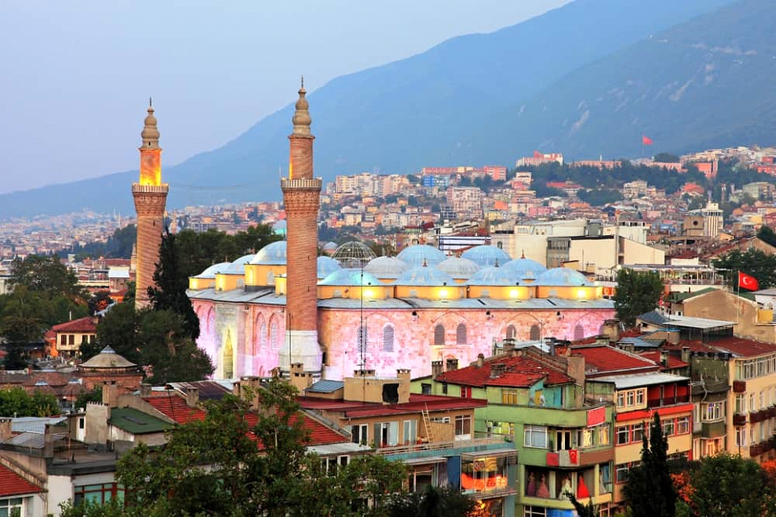
Hanlar Bölgesi’nde yer alan Ulu Camii, Bursa’da gezilecek yerlerin en önemlilerinden.
1400 yılında inşası tamamlanan cami, 1855 yılında gerçekleşen depremin ardından restore edilerek bugünkü görünümüne kazandırılmış.
Saf altından yapılma iplikle işlenen Kâbe Kapısı’nda bulunan örtünün değiştirilmesi üzerine bu camiye getirilmesinden dolayı Ulu Camii büyük önem kazanıyor.
ULU CAMİ
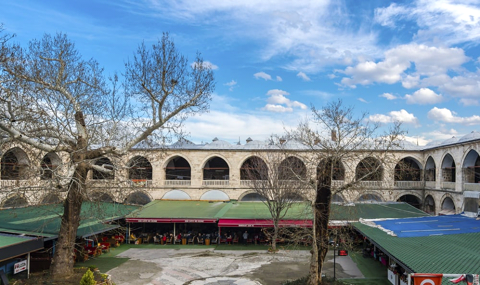
Osmanlı Devleti’nin başkenti, İstanbulluların tatil kaçamaklarının adreslerinden Bursa, yüzyıllar boyunca pek çok önemli esere gebe kalmış, sayısız etkinliğin ve olayın merkezi olmuş, doğaseverlerin gönlünü çalmaktan kendini alamamış gizli bir mabet gibi…
Yerli veya yabancı demeden herkesi kucaklayan bu sevgi dolu şehirde zamanın nasıl geçtiğini anlamayacak ve ayaklarınızın her defasında sizi buraya getirdiğini fark edeceksiniz.
PİRİNÇ HANI
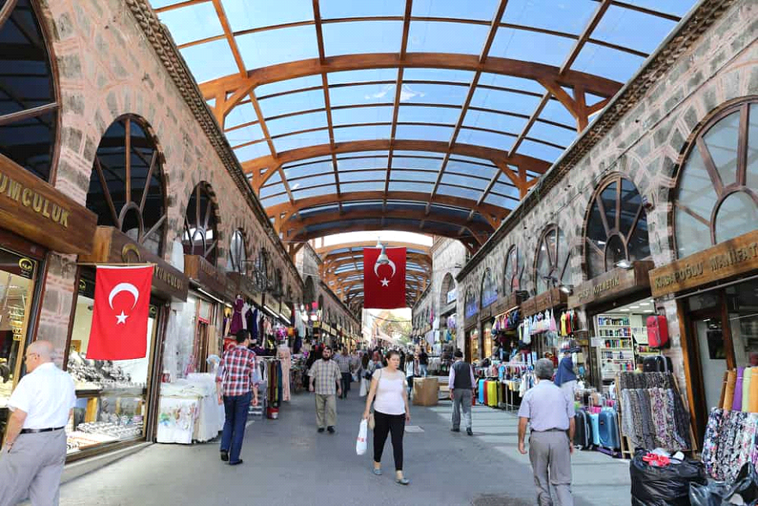
İlk olarak Uzun Çarşı adıyla hizmet veren Kapalı Çarşı’da giyim, yeme, içme, hediyelik eşya, takı gibi pek çok sektörde çalışan işletmeler yer alıyor.
Daha çok kuyumcularla karşılaşacağınız bu çarşı, 650 yıldan daha fazla süredir varlığını sürdüren Hanlar Bölgesi’nin içinde konumlanıyor.
KAPALI ÇARŞI
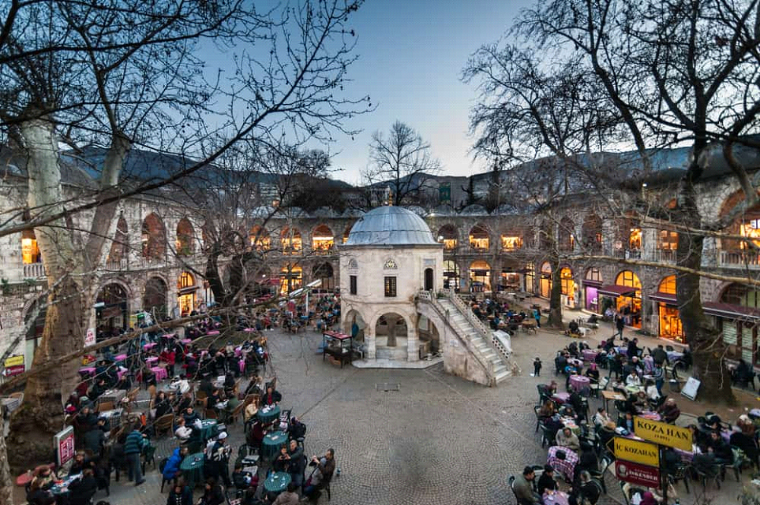
Hanlar Bölgesi’nde yer alan Ulu Camii, Bursa’da gezilecek yerlerin en önemlilerinden.
1400 yılında inşası tamamlanan cami, 1855 yılında gerçekleşen depremin ardından restore edilerek bugünkü görünümüne kazandırılmış.
Saf altından yapılma iplikle işlenen Kâbe Kapısı’nda bulunan örtünün değiştirilmesi üzerine bu camiye getirilmesinden dolayı Ulu Camii büyük önem kazanıyor.
KOZA HANI
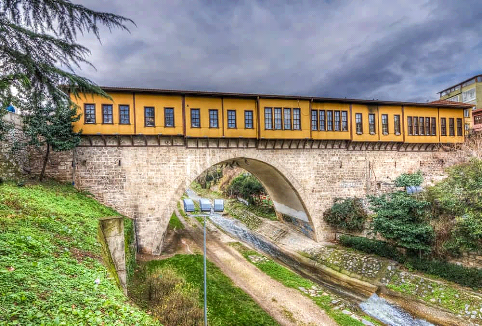
Osmanlı Devleti’nin başkenti, İstanbulluların tatil kaçamaklarının adreslerinden Bursa, yüzyıllar boyunca pek çok önemli esere gebe kalmış, sayısız etkinliğin ve olayın merkezi olmuş, doğaseverlerin gönlünü çalmaktan kendini alamamış gizli bir mabet gibi…
Yerli veya yabancı demeden herkesi kucaklayan bu sevgi dolu şehirde zamanın nasıl geçtiğini anlamayacak ve ayaklarınızın her defasında sizi buraya getirdiğini fark edeceksiniz.
IRGANDI KÖPRÜSÜ
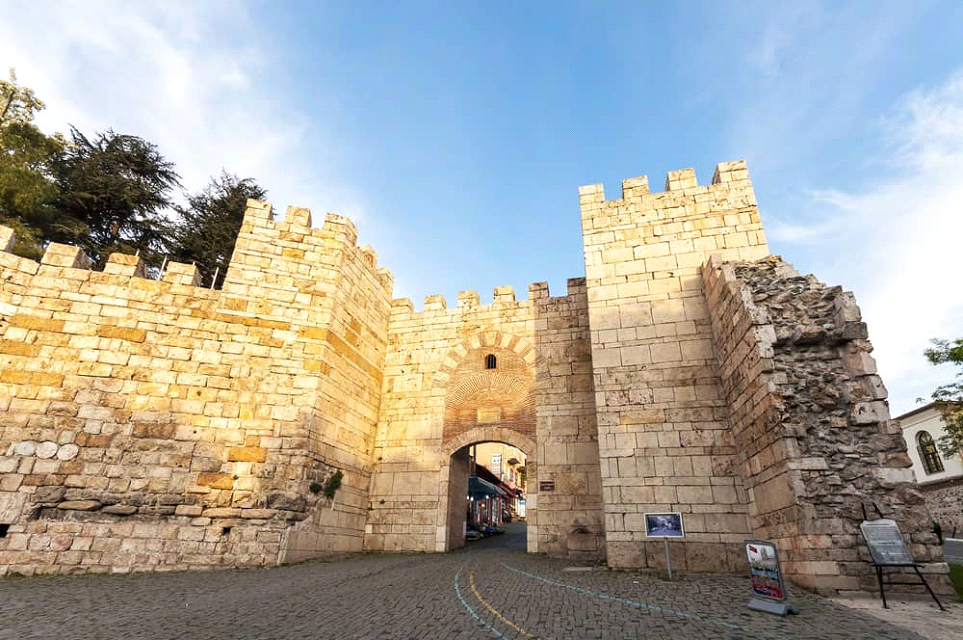
İlk olarak Uzun Çarşı adıyla hizmet veren Kapalı Çarşı’da giyim, yeme, içme, hediyelik eşya, takı gibi pek çok sektörde çalışan işletmeler yer alıyor.
Daha çok kuyumcularla karşılaşacağınız bu çarşı, 650 yıldan daha fazla süredir varlığını sürdüren Hanlar Bölgesi’nin içinde konumlanıyor.
BURSA KALESİ
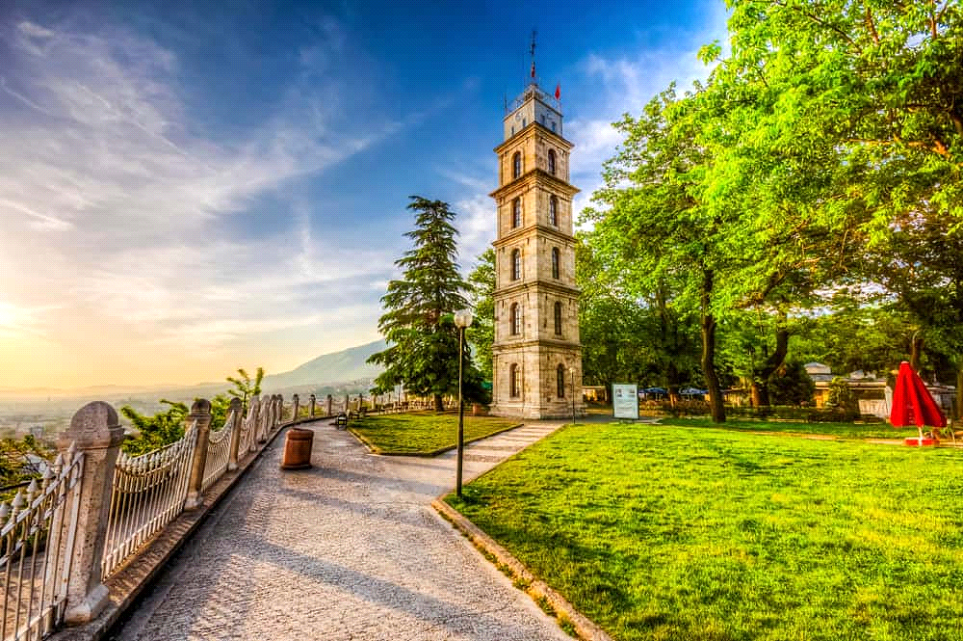
Hanlar Bölgesi’nde yer alan Ulu Camii, Bursa’da gezilecek yerlerin en önemlilerinden.
1400 yılında inşası tamamlanan cami, 1855 yılında gerçekleşen depremin ardından restore edilerek bugünkü görünümüne kazandırılmış.
Saf altından yapılma iplikle işlenen Kâbe Kapısı’nda bulunan örtünün değiştirilmesi üzerine bu camiye getirilmesinden dolayı Ulu Camii büyük önem kazanıyor.
TOPHANE SAAT KULESİ
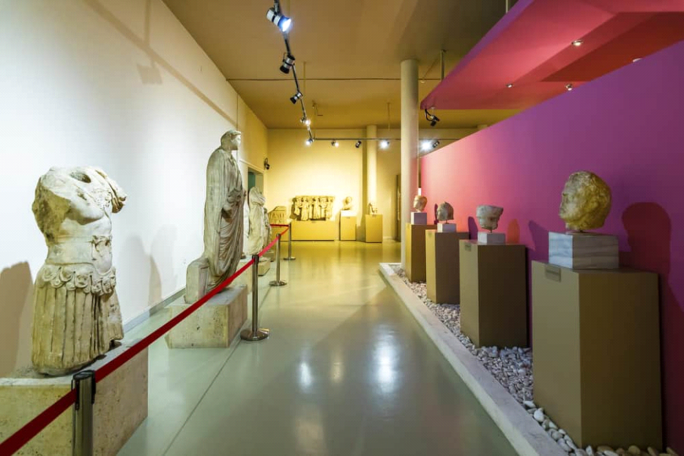
Ücretsiz olarak giriş yapabileceğiniz Bursa Arkeoloji Müzesi, 1902 yılında kurulmuş ve bir süre Yeşil Medrese’de hizmet vermiş.
Ancak daha sonra Kültürpark’taki binasına taşınan müze, Bursa ve çevresinde hüküm sürmüş medeniyetlerin tarihine ışık tutacak eserlere ev sahipliği yapıyor.
Yaz döneminde 9.00-19.00 saatleri arasında ziyarete açık olan müze, kış döneminde 8.00-17.00 saatleri arasında hizmet veriyor.
BURSA ARKEOLOJİ MÜZESİ
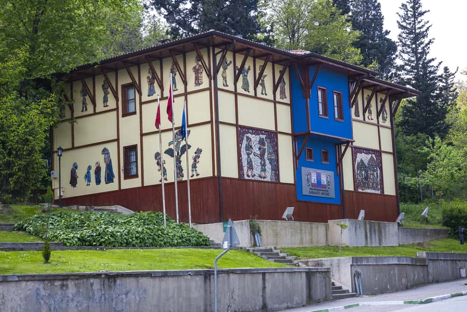
Çekirge Caddesi üzerinde yer alan bir trafo binasından dönüştürülen ve ücretsiz olarak gezebileceğiniz müzede iki galeri yer alıyor.
Gölge oyunlarına modern konseptte yeniden bakma fırsatına erişebileceğiniz Karagöz Müzesi, Karagöz oyunu kültürüne ait pek çok sergi ile pazartesi günleri dışında her gün sabah 9.30’dan akşam 17.30’a kadar misafirlerini karşılıyor.
KARAGÖZ MÜZESİ

ULUDAĞ
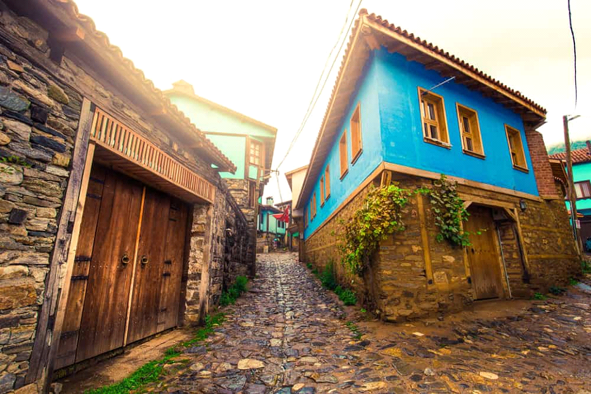
Turizme açılmış olan bu köy; Osmanlı mimarisinin ürünü, kimi restorasyon halinde kimi ise kullanımda olan ve sizi fesli-feraceli insanların olduğu döneme ışınlayacak dokulara sahip çoğu üç katlı evlerle tanıştıracak sizi.
CUMALIKIZIK
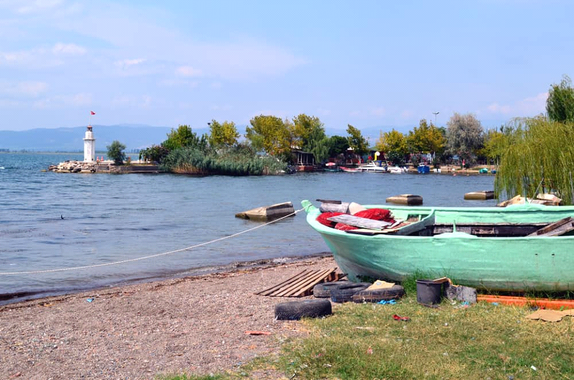
Osmanlı mimarisinden derin izler taşıyan, çiniciliğiyle ön plana çıkan İznik, tarihi ve doğal güzellikleri ile ziyaretçilerine adeta görsel şölen sunuyor.
Antik dönemde Askania olarak bilinen İznik Gölü ise 1950’li senelerden bu yana sürekli gelişerek hem doğa gezileri yapmak isteyenlere hem de kamp kuracaklara ortam sağlaması açısından İznik’in en önemli turistik merkezlerinden biri haline gelmiş.
Şu sıralar tadilat dolayısıyla kapalı olan ve 1388 Sultan I. Murad’ın validesi için yaptırılan bina 1960 yılında müze olarak hizmet vermeye başlamış.
Bahçesinde Osmanlı’dan Roma’ya kadar pek çok döneme ait tarihi eser bulunuyor. Müzenin içinde ise Ilıpınar Höyüğü’ndeki kazı çalışmalarından elde edilen eserler sergileniyor.
Tarihi İznik Kalesi, mermer mihraba sahip oluşuyla Osmanlı mimarisinde öne çıkan Yeşil Cami, İznik Gölü’ne komşuluk eden Antik Tiyatro ve İlk Çağ şehirlerinden Nikaia Antik Kenti’nden kalan tarihi dokular gibi detaylarla buluşmadan İznik’ten ayrılmamalısınız.